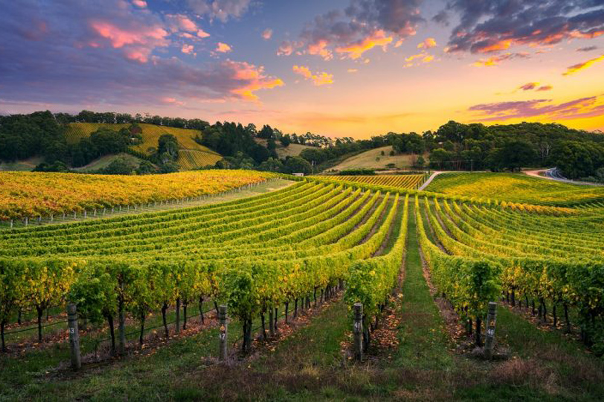
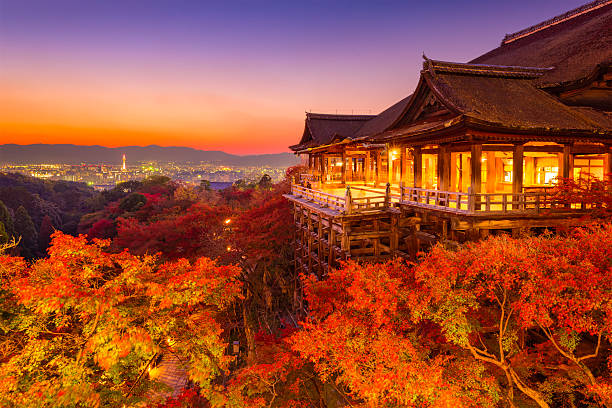

Get to Know Me
Hi there! My name is Emia Potocki de Montalk, and I am 21 years old. I'm French, Romanian, and I have some Polish roots, which is where my last name comes from.
Currently, I am a full-time student living in Paris, a city that has sparked my love for discovering new places. Traveling is one of my biggest passions, whether I am exploring a new road, a new city, or even a new country or continent.
For me, every journey is an opportunity to learn, meet new people, and experience different cultures. I’ve always believed that traveling opens your mind and enriches your life in ways that nothing else can. That's why I created this travel diary, to share my adventures and discoveries with you!
Feel free to follow along as I explore the world, one step at a time!
Fun Facts About Me:
- I am always on the lookout for hidden gems, from secret cafes to remote landscapes.
- In addition to traveling, I love photography and documenting my journeys with my camera.
- I'm a huge fan of exploring local cuisines wherever I go — you can learn a lot about a culture through its food!
- As a full-time student, I enjoy balancing my love for travel with my studies. Paris is the perfect base for both!
My Top Countries
These are some of my favorite countries I’ve visited! Each one holds a special place in my heart.

Australia
A country known for its stunning beaches, vibrant cities like Sydney, and vast outback. The wildlife and nature make it a dream destination.

Japan
A beautiful blend of ancient culture and modern technology. The food, peaceful gardens, and vibrant cities like Tokyo make Japan unforgettable.

Italy
Italy’s rich history, stunning art, and delicious food make it a top destination. Cities like Rome, Venice, and Florence are filled with charm.
Why I Love These Countries
These three countries have truly captured my heart for different reasons. Here's why they top my list:
Australia
Australia’s diverse landscapes and laid-back vibe are what I love the most. From the bustling streets of Sydney to the serene beaches and the Great Barrier Reef, Australia feels like an endless adventure.
Japan
Japan perfectly blends ancient traditions with modern innovation. I adore the culture, the delicious food, and the scenic beauty of places like Kyoto and Mount Fuji. There's a peaceful calmness about Japan that resonates with me.
Italy
Italy’s rich history, art, and mouthwatering cuisine make it one of my favorite destinations. From the ancient ruins of Rome to the picturesque Tuscan countryside, Italy is a place that never fails to leave a lasting impression.